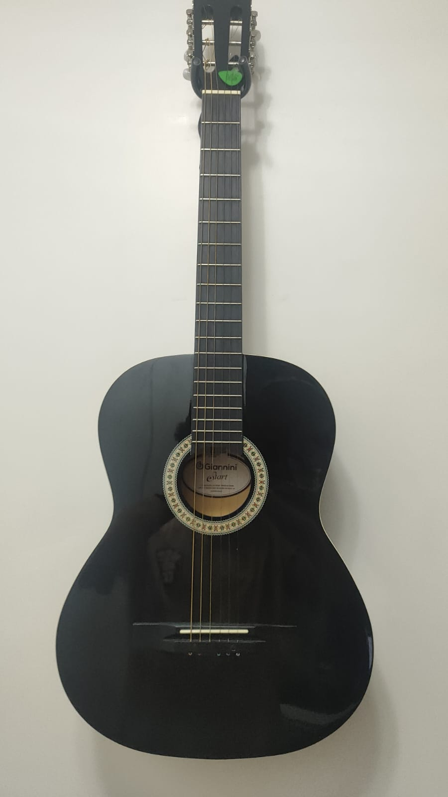
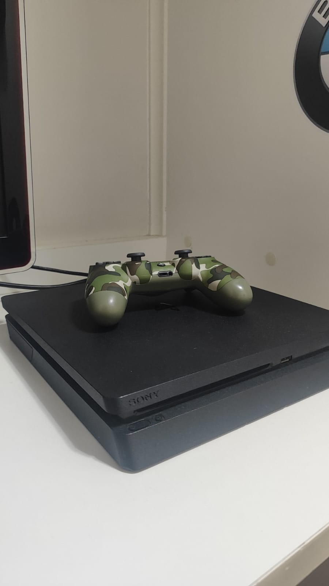
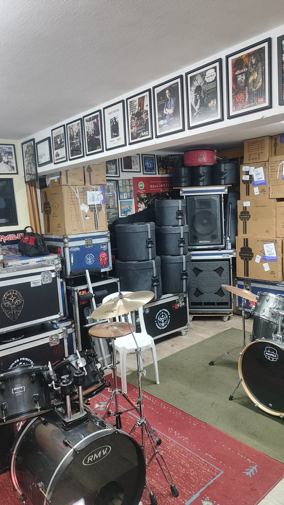
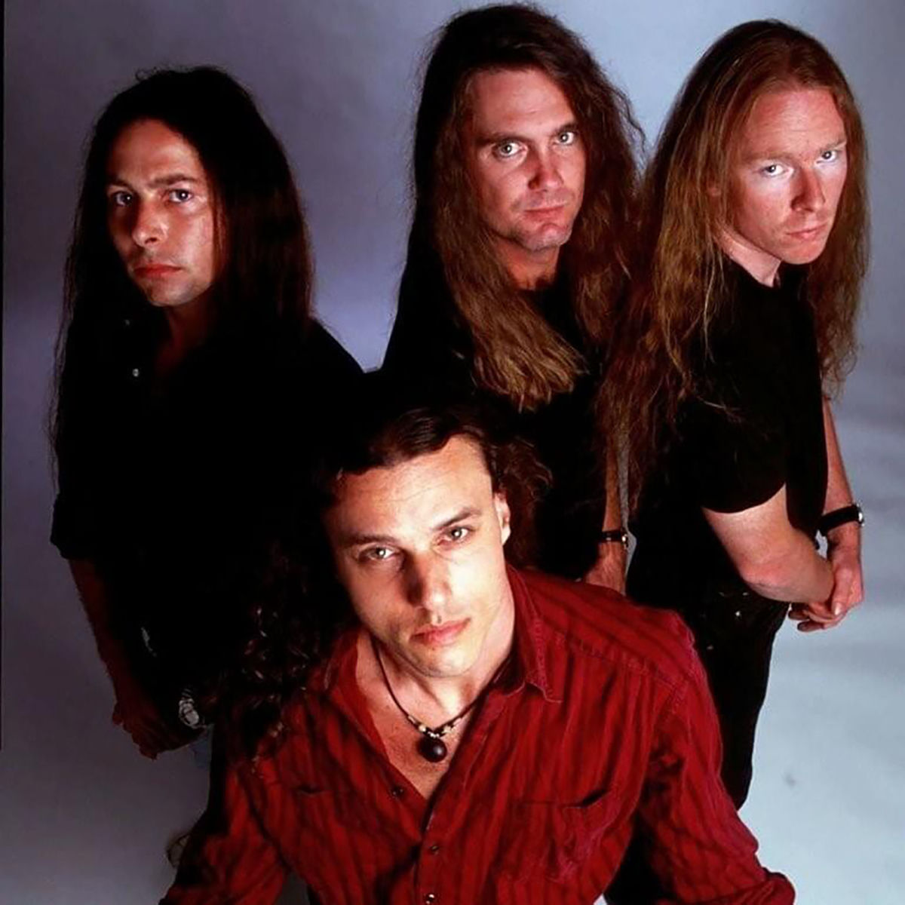
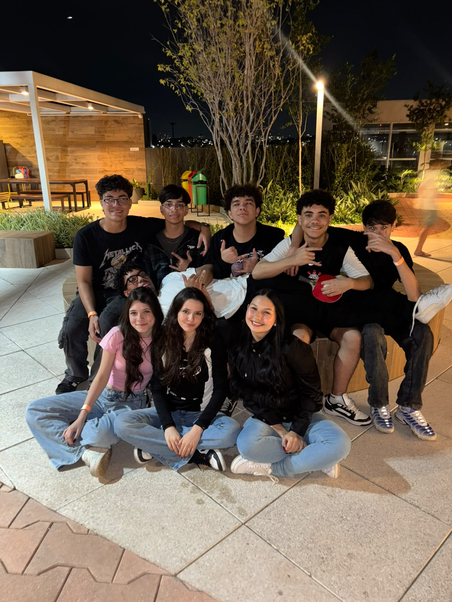

Cauê
Minha página pessoal
Opa! Eu sou o Cauê e tenho 16 anos.
Fiz esta página pessoal para vocês conhecerem mais sobre mim, meus gostos, meus hobbies e as pessoas que tornam minha vida melhor!


Quem eu sou
Meu nome
Meu nome completo é Cauê Minini Giroto Alvarez. O nome "Cauê" vem do tupi e significa "homem bondoso".
Minha cidade
Eu nasci em São Paulo e cresci aqui! Atualmente, moro em Pirituba, no Parque São Domingos.
Meu jeito
Meu jeito é ser engraçado, bagunceiro, compreensivo e amigo. Sempre procuro ser uma pessoa legal e boa para todos.
O que eu gosto de fazer
Violão e guitarra
Eu curto muito tocar violão. Toda semana, procuro aprender uma música nova, mas meu objetivo principal é ter uma guitarra e aprender a tocá-la.
Jogar
Eu gosto muito de jogar. Tenho meu PlayStation 4, que já está comigo há quase 7 anos, e já vivi diversas experiências com ele.
Música
Eu gosto muito de escutar música e de viver a música em geral. Ter contato com coisas que têm relação com artistas que eu amo me faz adorar música ainda mais. Abaixo está a foto do estúdio do meu baterista preferido, o Aquiles Priester.




Meus gostos
Músicas
Alguns artistas e bandas que gosto de ouvir:
- Death
- Gojira
- Children of Bodom
Meu estilo de música favorito é metal.
Minha música favorita é "Bite the Pain", do Death.
Jogos
Alguns jogos de que eu gosto:
- Red Dead Redemption 2
- Grand Theft Auto V
- Dead by Daylight
Meu jogo favorito é Dead by Daylight porque me proporcionou vários momentos incríveis e engraçados com meus amigos.



Pessoas importantes
Conheça as pessoas mais importantes para mim. Acredite, elas valem mais do que muito dinheiro.



E essa é a minha família.